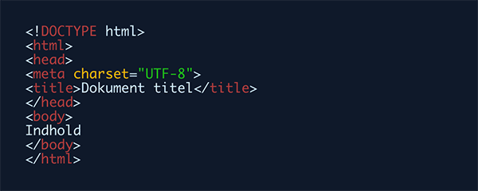
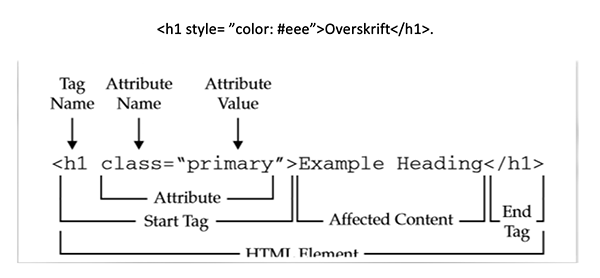

HTML er en slags byggesten for en hjemmeside.
HTML står for Hypertext Markup Language.
HTML er sproget som browseren læser og forstår på.
HTML er det sprog, vi skriver hjemmesider i.
Det, der som sker, en web browser læser HTML-koden fra et website og bruger koden som anvisning til, hvordan hjemmesiden skal se ud.
Mr. Tim Berners- Lee fandt HTML tilbage i år 1990 (eller cirka deromkring)
Til at starte med målet var at gøre det nemt for forskere på forskellige universiteter at få adgang til hinandens resultater. Den første version af HTML blev formelt offentliggjort i juni 1993.
Men ... Hvad står HYPER TEXT MARK-UP LANGUAGE for?
Hyper: er det modsatte af lineær. Det betyder så at i modsætning til hvordan det har været i starten, hvor vi nu ikke behøver at følge en lineær vej, vi kan klikke rundt som vi vil og gå derhenne hvor vi vil.
Text: det er tekst i indholdet.
Mark up: er det man gør med teksten. Når du for eks. markerer den op med overskrifter eller dens placering på siden osv...
Language: betyder “ sprog “ på dansk. I og med at HTML er et sprog for browsere, så giver det en god nok mening.
Tags er ordene for HTML sproget. Hvis du f.eks. vil lave stykke brødtekst, skal du angive det med et paragraftag
…
En HTML side, skal have en struktur. Den struktur danner man ved at bruge en række tags som skal være der, før det fungerer.
Det første tag er en html-tag, som fortæller browseren at dette her en html dokument. Head-tagget hvor du kan angive titlen på dokumentet. Det er dog ikke noget der dukker op på siden men Google bruger det i deres søgeresultater. Meta charset HTML-tegnsæt attribut bruges til at specificere tegnkodningen for HTML-dokumentet. Vi har derudover body-tagget og det er tagget hvor indholdet på ens side skal findes.
Ens kodning skal helst have en god struktur. Det skal være nemt at læse og forstå, for både for en selv men også til de andre som skal rette ens kode, bruger eller klienter.
Man bruger attributter til at style på elementerne. Vi kan f.eks. have en style attribut til en overskrift for at ændre farven på den.
SEO står for Search Engine Optimization.. betyder på dansk søgemaskineoptimering. SEO-optimering har en afgørende betydning for, ens hjemmeside kommer frem i søgefeltet, det kan også bruges til at henvende til en bestemt målgruppe.
https://www.html.dk/tutorials/html/
Intro til HTML.pdf